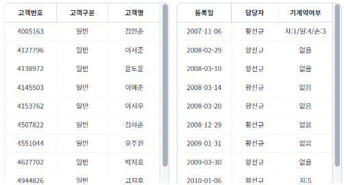
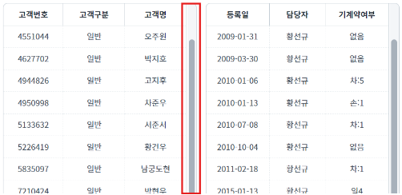
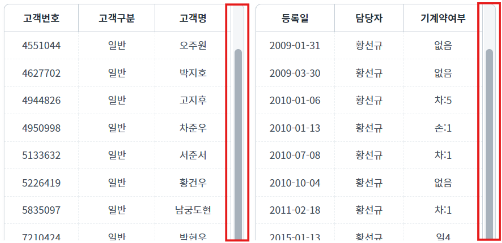
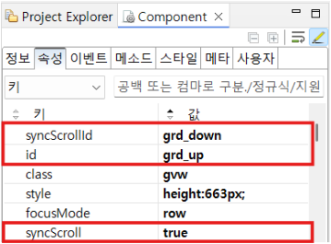
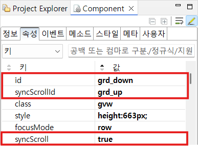

GridView의 속성 'syncScroll'과 'syncScrollId'를 사용하여 2개 GridView의 스크롤을 동기화하는 예제입니다.
2개 GridView 스크롤 동기화
1
STEP 1: 초기 상태를 확인합니다.
GridView가 2개 있습니다.
Image 1.브라우저(Chrome) 실행 예시

2
STEP 2: 좌측 GridView의 스크롤을 내립니다.
Image 2.브라우저(Chrome) 실행 예시

3
STEP 3: 실행된 결과를 확인합니다.
우측 GridView도 함께 내려갑니다.
Image 3.브라우저(Chrome) 실행 예시

[필수] syncScroll="true"
[필수] syncScrollId="GridViewId"
Image 4.웹스퀘어 스튜디오의 Component View - 'grd_up' 속성 설정 예시

Image 5.웹스퀘어 스튜디오의 Component View - 'grd_down' 속성 설정 예시

syncScroll
syncScrollId